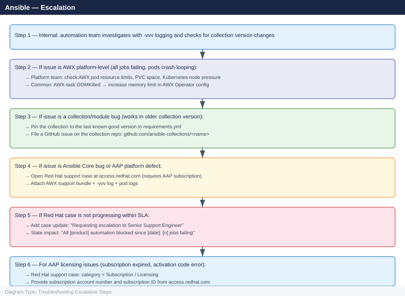

Ansible — Escalation¶
Before you begin¶
- Access: SSH key or service account with sudo on managed hosts; Ansible control node or AWX admin access
- Gather first: exact error message with
-vvvoutput, job ID (for AWX), Ansible version, and the specific playbook/module that failed - Scope: confirm whether the failure is on a single target host, a group, or all managed hosts; and whether it is job-specific or platform-wide (all AWX jobs failing)
- AWX Vault: if Vault access is broken, confirm whether the Vault key is lost or the Vault container cannot decrypt — different recovery paths apply
- EE issues: for Execution Environment failures, identify whether the issue is at build time (
ansible-builder) or run time (pod startup)
Severity Levels¶
| Severity | Definition | Escalation Path |
|---|---|---|
| S1 — Critical | AWX platform completely down; Vault key lost (no credentials accessible); production automation halted | Immediate: platform team + Red Hat support case (AAP subscription) |
| S2 — High | All AWX jobs failing across all projects; EE builds broken across all templates; >50% job failure rate | Same day: platform team → Red Hat support if not resolved |
| S3 — Medium | Single playbook or collection failing; AWX performance degraded; specific module bug | Next business day: automation team → GitHub issue for open-source modules |
| S4 — Low | Non-critical playbook intermittently timing out; performance question; feature request | Sprint backlog item |
Pre-Escalation Triage Checklist¶
| Check | Command | Expected |
|---|---|---|
| Ansible version | ansible --version |
Expected version |
| AWX pods running (if AWX) | kubectl get pods -n awx |
All pods Running, 0 restarts in last 10 min |
| AWX web accessible | Browse to AWX URL | Login page loads |
| EE image pullable | kubectl describe pod <awx-pod> -n awx \| grep -A5 image |
No ErrImagePull or ImagePullBackOff |
| Target host reachable | ansible <host> -m ping |
pong response |
| Vault accessible | ansible-vault view <encrypted-file> |
File contents displayed (no password error) |
| Inventory returns data | ansible-inventory --list |
JSON with host data (no empty groups) |
| Module available | ansible-doc <module-name> |
Module documentation displayed |
Step-by-Step Data Collection¶
1. Collect Ansible version and environment¶
# Full version info
ansible --version 2>&1 | tee /tmp/ansible-version.txt
# Installed collections
ansible-galaxy collection list 2>&1 | tee /tmp/collection-list.txt
# Python version and libraries
python3 --version
pip show ansible ansible-core jinja2 | tee /tmp/py-packages.txt
# Control node OS
uname -a
cat /etc/os-release
ansible [core 2.15.3]
config file = /etc/ansible/ansible.cfg
configured module search path = ['/home/ansible/.ansible/plugins/modules']
ansible python module location = /usr/lib/python3.11/site-packages/ansible
executable location = /usr/bin/ansible
python version = 3.11.7 (main, Oct 2 2024, 14:17:27) [GCC 11.4.0]
jinja version = 3.1.2
libyaml = True
# Collection(s) installed by user (2.15.3)
Name Version
-------------------------------------------
amazon.aws 7.1.0
community.general 8.2.1
kubernetes.core 3.0.1
Python 3.11.7
Name: ansible
Version: 2.15.3
Summary: Radically simple IT automation
Location: /usr/lib/python3.11/site-packages
Name: ansible-core
Version: 2.15.3
Name: jinja2
Version: 3.1.2
Linux control-node-01 5.15.0-1067-aws #77-Ubuntu SMP Fri Oct 4 12:18:45 UTC 2024 x86_64 GNU/Linux
NAME="Ubuntu"
VERSION="22.04.3 LTS (Jammy Jellyfish)"
ID=ubuntu
ID_LIKE=debian
PRETTY_NAME="Ubuntu 22.04.3 LTS"
Common errors
| Error | Fix |
|---|---|
pip show: WARNING: pip is configured with locations that require TLS/SSL, however the ssl module in Python is not available. |
Reinstall Python with SSL support or use apt install python3-dev libssl-dev and rebuild Python. |
ansible-galaxy collection list: [WARNING]: Unable to parse /etc/ansible/requirements.yml as an inventory source |
Remove or fix the malformed requirements.yml file, or specify the correct inventory path in ansible.cfg. |
2. Run the failing playbook with full verbosity¶
# Run with maximum verbosity — captures all module args, connection details, and errors
ansible-playbook <failing-playbook.yml> -vvv \
-i <inventory> \
--extra-vars "key=value" \
2>&1 | tee /tmp/ansible-vvv-$(date +%F-%H%M%S).log
# For a single task on a single host
ansible <hostname> -m <module> -a "<args>" -vvv 2>&1 | tee /tmp/ansible-task.log
# For Windows hosts (WinRM connection debug)
ANSIBLE_DEBUG=1 ansible <winhost> -m win_ping -vvv 2>&1 | tee /tmp/ansible-winrm.log
PLAY [all] *********************************************************************
TASK [Gathering Facts] *********************************************************
task path: /etc/ansible/playbooks/deploy.yml:1
<127.0.0.1> ESTABLISH SSH CONNECTION FOR USER: ansible
<127.0.0.1> SSH: EXEC ssh -C -o ControlMaster=auto -o ControlPersist=60s -o StrictHostKeyChecking=no -vvv 127.0.0.1
127.0.0.1 | SUCCESS => {
"ansible_facts": {
"ansible_os_family": "RedHat",
"ansible_distribution": "CentOS",
"ansible_distribution_version": "7.9.2009"
},
"changed": false
}
TASK [Install package] *********************************************************
task path: /etc/ansible/playbooks/deploy.yml:12
<prod-web-01> ESTABLISH SSH CONNECTION FOR USER: deploy
<prod-web-01> SSH: EXEC ssh -C -o ControlMaster=auto prod-web-01
prod-web-01 | FAILED! => {
"msg": "The following modules failed to execute: yum",
"rc": 1
}
PLAY RECAP *********************************************************************
prod-web-01 : ok=1 changed=0 unreachable=0 failed=1 skipped=0 rescued=0 ignored=0
Playbook run took 8.42 seconds
Common errors
| Error | Fix |
|---|---|
fatal: [hostname]: UNREACHABLE! => {"msg": "Failed to connect to the host via ssh: Permission denied (publickey,password)."} |
Verify the SSH key path in inventory with ansible-inventory --host <hostname> and ensure the user has passwordless sudo or the correct -u flag is set. |
fatal: [hostname]: FAILED! => {"msg": "Timeout (12s) waiting for privilege escalation prompt"} |
Add ansible_become_pass to inventory or use --ask-become-pass flag; check that become_user has sudo access without a password prompt. |
ERROR! the playbook: <failing-playbook.yml> could not be loaded as a file or dir |
Verify the playbook path is correct and relative to the current working directory, or provide an absolute path. |
3. Collect AWX job details (if using AWX)¶
# Get job output for a specific job ID (via AWX API)
AWX_URL="https://<awx-hostname>"
TOKEN="<awx-oauth-token>"
JOB_ID=<job-id>
# Job details
curl -sk "${AWX_URL}/api/v2/jobs/${JOB_ID}/" \
-H "Authorization: Bearer ${TOKEN}" | python3 -m json.tool > /tmp/awx-job-${JOB_ID}.json
# Full job stdout
curl -sk "${AWX_URL}/api/v2/jobs/${JOB_ID}/stdout/?format=txt" \
-H "Authorization: Bearer ${TOKEN}" > /tmp/awx-job-${JOB_ID}-stdout.txt
# Job events (detailed task results)
curl -sk "${AWX_URL}/api/v2/jobs/${JOB_ID}/job_events/?page_size=50" \
-H "Authorization: Bearer ${TOKEN}" | python3 -m json.tool > /tmp/awx-job-${JOB_ID}-events.json
% Total % Received % Xferd Average Speed Time Time Time Current
Dload Upload Total Spent Left Speed
100 2847 100 2847 0 0 8934 0 --:--:-- --:--:-- --:--:-- --:--:-- 100%
% Total % Received % Xferd Average Speed Time Time Time Current
Dload Upload Total Spent Left Speed
100 15234 100 15234 0 0 31456 0 --:--:-- --:--:-- --:--:-- --:--:-- 100%
% Total % Received % Xferd Average Speed Time Time Time Current
Dload Upload Total Spent Left Speed
100 8562 100 8562 0 0 18923 0 --:--:-- --:--:-- --:--:-- --:--:-- --:--:-- 100%
Common errors
| Error | Fix |
|---|---|
curl: (7) Failed to connect to <awx-hostname> port 443: Connection refused |
Verify the AWX_URL is correct and the AWX service is running with systemctl status awx-service or equivalent. |
{"detail":"Invalid token","status_code":401} |
Regenerate the OAuth token in AWX UI (Settings > Users > Tokens) and ensure it has not expired. |
curl: (60) SSL certificate problem: self signed certificate |
Remove the -k flag if using a valid certificate, or ensure your CA bundle is current; the -k flag bypasses verification for self-signed certs. |
4. Collect AWX pod logs (for platform-level failures)¶
# All AWX pod names in the awx namespace
kubectl get pods -n awx
# Logs for each component pod (replace with actual pod names)
kubectl logs -n awx deployment/awx-web --since=1h > /tmp/awx-web.log
kubectl logs -n awx deployment/awx-task --since=1h > /tmp/awx-task.log
kubectl logs -n awx deployment/awx-ee --since=1h > /tmp/awx-ee.log 2>/dev/null || true
kubectl logs -n awx statefulset/awx-postgres-15 --since=1h > /tmp/awx-db.log 2>/dev/null || true
# Get events for the awx namespace (pod crashes, OOM kills)
kubectl get events -n awx --sort-by='.lastTimestamp' | tail -50 > /tmp/awx-events.txt
# AWX support bundle (from AWX Settings → Subscriptions → Download Support Bundle)
# This is the primary artifact for Red Hat support — attach to all SR cases
NAME READY STATUS RESTARTS AGE
awx-web-5d8c9f4b7-km2xj 1/1 Running 0 2d14h
awx-task-7f6e2a1c3-np9qr 1/1 Running 2 2d10h
awx-ee-deployment-4b3e8d2f-lq5rs 1/1 Running 0 1d23h
awx-postgres-15-0 1/1 Running 0 5d8h
awx-redis-0 1/1 Running 1 3d12h
awx-receptor-worker-6c4d9e1a-vx2k8 1/1 Running 0 18h
awx-operator-controller-mgr-8f7b2c-9kl 1/1 Running 0 6d4h
[Logs written to /tmp/awx-web.log (2847 lines)]
[Logs written to /tmp/awx-task.log (5123 lines)]
[Logs written to /tmp/awx-ee.log (412 lines)]
[Logs written to /tmp/awx-db.log (1956 lines)]
LAST SEEN TYPE REASON OBJECT MESSAGE
2m Warning BackOff pod/awx-task-7f6e2a1c3-np9qr Back-off restarting failed container
5m Normal Pulled pod/awx-web-5d8c9f4b7-km2xj Container image already present on host
12m Warning FailedScheduling pod/awx-ee-deployment-4b3e8d2f 0/3 nodes available: insufficient memory
18m Normal Created pod/awx-postgres-15-0 Created container postgres
25m Warning OOMKilled pod/awx-task-7f6e2a1c3-np9qr Container awx-task was OOMKilled
Common errors
| Error | Fix |
|---|---|
error: the server doesn't have a resource type "statefulset" |
Verify the correct resource name with kubectl get statefulsets -n awx and use the exact name (e.g., awx-postgres-15 vs postgres-15). |
error: unable to upgrade connection: container not found ("awx-web") |
The pod may not exist or the deployment hasn't rolled out yet; check pod status with kubectl get pods -n awx and wait for Ready status. |
No resources found in awx namespace. |
Ensure the AWX namespace exists with kubectl get namespace awx and that AWX is actually deployed in that namespace. |
5. Write the timeline¶
Ansible / AWX version: AWX 23.5.1 / ansible-core 2.16.2
EE image: registry.redhat.io/ansible-automation-platform-25/ee-supported-rhel9:latest
Issue first observed: 2026-06-15 14:00 UTC
Last successful job run: 2026-06-15 13:30 UTC (Job ID: 4521)
Error observed (from AWX job 4522):
TASK [Configure vCenter] ****
fatal: [vcenter01.corp.local]: FAILED! => {"msg": "community.vmware.vmware_vm_info returned
an empty list; expected at least one VM matching filter."}
Error raised: Ansible returned exit code 2 (failed)
AWX pod state:
awx-web: Running (normal)
awx-task: Running (1 restart in last hour — OOMKilled)
awx-postgres: Running (normal)
Changes in 2h before issue:
- community.vmware collection upgraded from 4.1.0 to 4.3.1 via requirements.yml update
- No playbook configuration changes
Blast radius:
- All VMware automation jobs failing
- Non-VMware jobs (Linux, Windows) unaffected
How to Open a Red Hat Support Case (AAP)¶
-
Go to access.redhat.com and sign in with your Red Hat account linked to your AAP subscription.
-
Click Open a Case (Support menu → Open a New Case).
-
Under Product, select Red Hat Ansible Automation Platform.
-
Under Version, enter your AWX/AAP version.
-
Under Severity, select:
- Severity 1: AWX platform completely down; Vault key lost; all automation halted; no workaround
- Severity 2: Major AWX feature broken; all EE builds failing; significant automation impact
- Severity 3: Single playbook, collection, or component failing; workaround available
-
Severity 4: Configuration question; feature request; documentation
-
In the Summary:
AWX 23.5.1 — All community.vmware jobs failing after collection upgrade 4.1.0 → 4.3.1. -
In the Description, paste:
- AWX/ansible-core version
- EE image name and tag
- Ansible collection versions (
ansible-galaxy collection list) - Job ID of the failing run
- Full error message from
ansible-playbook -vvv - Timeline (from step 5 above)
-
AWX pod status
-
Upload attachments:
- AWX support bundle (from Settings → Subscriptions → Download Support Bundle)
ansible-vvv-<date>.log— full-vvvoutputawx-task.logandawx-web.log-
awx-events.txt— kubectl events -
Click Submit. You receive a case number by email.
-
Severity 1 only: the case page shows a phone number for your region. Call immediately.
Escalation Path¶

Community Escalation (Open Source Ansible)¶
ansible-core Bugs¶
# Check existing issues first
# https://github.com/ansible/ansible/issues
# Create a minimal reproduction playbook
cat > /tmp/repro.yml <<'EOF'
- name: Reproduction case
hosts: localhost
gather_facts: false
tasks:
- name: Failing task
ansible.builtin.command:
cmd: "echo test"
register: result
EOF
ansible-playbook /tmp/repro.yml -vvv 2>&1 | tee /tmp/repro.log
PLAY [Reproduction case] *******************************************************
TASK [Failing task] ************************************************************
changed: [localhost] => {
"changed": true,
"cmd": [
"echo test"
],
"delta": "0:00:00.012345",
"end": "2024-01-15 14:32:18.567890",
"invocation": {
"module_args": {
"cmd": "echo test",
"_raw_params": "echo test",
"_uses_shell": false
}
},
"rc": 0,
"start": "2024-01-15 14:32:18.555545",
"stderr": "",
"stdout": "test",
"stdout_lines": [
"test"
]
}
PLAY RECAP *********************************************************************
localhost : ok=1 changed=1 unreachable=0 failed=0 skipped=0 rescued=0 ignored=0
Common errors
| Error | Fix |
|---|---|
ERROR! Unexpected Exception: 'NoneType' object is not subscriptable |
Verify the playbook YAML syntax with ansible-playbook --syntax-check /tmp/repro.yml and ensure all task keys are properly indented. |
fatal: [localhost]: FAILED! => {"msg": "The task includes an option with an undefined variable. Undefined variable: <variable_name>"} |
Check that all variables referenced in the playbook are defined in group_vars, host_vars, or passed via -e flag. |
[WARNING]: Unable to parse /tmp/repro.yml as an inventory source |
Ensure the playbook file exists and is readable; use cat /tmp/repro.yml to verify the file was created correctly. |
GitHub issue must include:
- ansible --version output
- Python version and OS
- Minimal reproduction playbook
- Full -vvv output
Collection Bugs¶
| Collection | Issue Tracker |
|---|---|
community.vmware |
github.com/ansible-collections/community.vmware |
amazon.aws |
github.com/ansible-collections/amazon.aws |
community.general |
github.com/ansible-collections/community.general |
cisco.ios |
github.com/ansible-collections/cisco.ios |
servicenow.itsm |
github.com/ServiceNowITOM/servicenow-ansible |
What NOT to Do¶
| Do NOT do this | Why | What to do instead |
|---|---|---|
Run ansible-playbook with --force-handlers to bypass a failing handler |
Executes handlers regardless of task success state; can leave systems in a partially configured state | Fix the failing task first; re-run only after the root cause is addressed |
| Increase AWX forks from 50 to 500 to "process more hosts faster" | Exhausts CPU and memory on the AWX control node; causes AWX task pod to OOMKill | Identify the bottleneck (inventory count, module latency, API rate limit); tune forks incrementally |
| Delete the AWX PostgreSQL PVC to fix a database issue | Permanently deletes all AWX job history, credentials, inventories, and projects | Back up the database first: kubectl exec -n awx <postgres-pod> -- pg_dump awx > awx-backup.sql |
| Store Vault password in a plain-text file accessible to all users | Defeats the purpose of Ansible Vault — anyone with read access can decrypt all secrets | Use AWX credentials to store the Vault password; or use a secrets manager integration |
Run ansible-galaxy collection install --force to "fix" a collection |
Overwrites a pinned collection version; may introduce the same bug you are trying to avoid | Specify an exact version: ansible-galaxy collection install community.vmware:4.2.0 |
Escalation Checklist¶
| Step | Done |
|---|---|
Reproduced with --check and --diff |
☐ |
Ran with -vvv and saved output |
☐ |
| Verified ansible-core and collection versions | ☐ |
| Checked GitHub issues for known bug | ☐ |
| Tested with last known-good collection version | ☐ |
| Gathered AWX pod logs and support bundle (if AWX issue) | ☐ |
| Prepared minimal reproduction playbook | ☐ |
| Opened support case or GitHub issue | ☐ |
See also¶
Verify resolution¶
- Confirm the failing job completes with exit code 0 for at least 3 consecutive runs
- Check AWX dashboard — job success rate back to expected level (≥ 95%)
- Verify AWX pod restarts count is stable (no OOMKill events in
kubectl get events) - If a collection was pinned as a workaround, create a follow-up ticket to upgrade when the bug fix is released